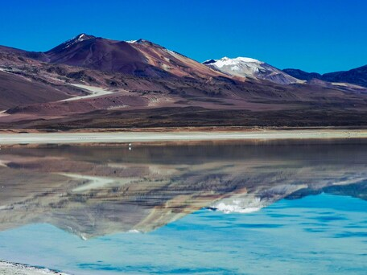
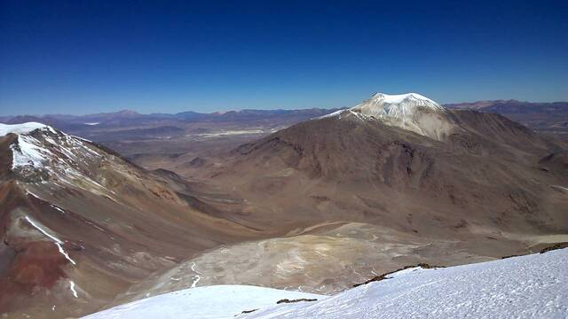

Bolivie
Explorez les trésors cachés de la Bolivie, un pays où la nature exerce son pouvoir dans toute sa splendeur. De ses hauts plateaux andins à l'Amazonie luxuriante, en passant par les salines scintillantes du Salar d'Uyuni et les villes chargées d'histoire comme Sucre et Potosí, la Bolivie offre une palette infinie d'expériences riches en diversité et en authenticité.
Que vous soyez un amateur de randonnée à la recherche de défis en altitude, un passionné de culture désireux d'explorer les traditions millénaires des peuples indigènes, ou un aventurier en quête de nouvelles perspectives, la Bolivie vous promet des moments inoubliables. Préparez-vous à être émerveillé par la grandeur des paysages, à goûter aux saveurs uniques de la cuisine bolivienne et à être touché par la chaleur et l'hospitalité de ses habitants.
Notre guide complet vous accompagnera dans la planification de votre voyage en Bolivie en vous fournissant des informations précieuses sur les sites à visiter, les activités à ne pas manquer, les conseils de voyage, les formalités administratives et bien plus encore. Laissez-vous inspirer par la magie de la Bolivie et embarquez pour une aventure épique dans ce joyau méconnu de l'Amérique du Sud.


10 CONSEILS POUR VOYAGER EN BOLIVIE

- Comparer les horaires des différentes compagnies dans les gares routières et vérifier l’état du bus (et du conducteur) avant de monter. Inutile de se mettre en danger pour économiser quelques bolivianos.
- Ne pas être trop pressé et bien tenir compte des temps de trajet lors de la construction de son itinéraire. D’autant plus que les horaires des transports peuvent être inconstants.
- Éviter de voyager pendant la saison des pluies (surtout le mois de janvier). Les routes peuvent devenir impraticables et rendre l’accès à certaines régions impossible.
- Prévoir des vêtements chauds, les couvertures ne suffisent pas toujours… Il fait vraiment froid dans certaines régions d’altitude.
- Prendre le temps de s’acclimater à l’altitude avant toute randonnée. Les Boliviens vous conseilleront de mâcher de la coca pour en limiter les effets.
- Faire attention à ce que vous mangez et buvez. Prévoyez des médicaments contre la turista (juste au cas où).
- Entrer en contact avec d’autres voyageurs pour partager les frais d’excursions. Quelques destinations se visitent uniquement avec un guide. Vous pouvez voir les voyageurs autour de vous grâce au site Backpackmeet.
- Apprendre les bases en espagnol, car les Boliviens ne parlent pas (ou très peu) anglais.
- Être patient et compréhensif avec les Boliviens, ils sont un peu plus timides que leurs voisins. Même s’ils peuvent sembler un peu froids au premier abord, la plupart des voyageurs ont apprécié leur accueil.
- Rester vigilant face à la sécurité et aux arnaques, principalement dans certains quartiers de La Paz et dans les terminaux de bus. Cela dit, vous pouvez appliquer les mêmes précautions que dans les autres pays d’Amérique du Sud : faites preuve de bon sens, évitez de vous balader seul la nuit, ne montrez pas vos objets de valeur… La corruption est courante, demander un reçu en cas d’amende peut parfois décourager.
Carte d'identité
Désert de sel en Bolivie
Le Salar d'Uyuni est l'une des attractions naturelles les plus emblématiques de la Bolivie et l'un des plus grands déserts de sel du monde. Il s'étend sur environ 10 582 kilomètres carrés.
Ce paysage est le résultat de l'évaporation de l'ancien lac préhistorique Minchin, qui s'est transformé en un vaste désert de sel couvrant la région. Le sel est incroyablement plat et uniforme, créant ainsi une surface réfléchissante qui donne l'illusion de fusionner avec le ciel.
Contexte politique
La Révolution de 1952 a conduit à la mise en œuvre de réformes sociales et économiques importantes, notamment la réforme agraire, l'extension des droits des travailleurs et le suffrage universel
Dans les années 1960 et 1970, le gouvernement bolivien a notamment le pétrole, notamment le pétrole et le gaz naturel, ce qui a accru la présence de l'État dans l'économie et a conduit à des tensions avec les entreprises étrangères.
Jusqu’aux années 2000, le pays connais une instabilité politique notamment du aux nombreux coup d’états militaires et au développement du narcotrafic. En 2000, à Cochabamba, une entreprise étrangère obtient un contrat monopolisant l'eau, une partie de la population ne peut plus boire en raison de la tarification “Guerre de l’eau”. Des manifestations ont permis l’annulation du contrat.
Evo Morales, membre de l'ethnie Aymara est devenu président en 2006. Sous sa présidence, la Bolivie a connu une période de stabilité politique relative, combinée à des réformes économiques et sociales axées sur les populations autochtones et les classes défavorisées. Il sera cependant accusé de fraude électorale en 2019 et devra s’exiler au Mexique.
Le Salar d'Uyuni
Situé à une centaine de kilomètres de la frontière chilienne, dans la grande région de l’Altiplano, le plus vaste désert de sel du monde est perché à 3 658 mètres d’altitude. Le Salar d’Uyuni fait partie des paysages les plus époustouflants d’Amérique du Sud. Il prend même la première place de notre classement des 200 plus beaux endroits du monde. Effet miroir ou sel blanc éclatant, selon la saison, le Salar d’Uyuni montre un visage différent, mais ne déçoit jamais. Si vous n’avez pas votre propre véhicule, vous pouvez facilement visiter le Salar dans le cadre d’un tour en 4×4. Selon votre itinéraire global en Amérique du Sud, vous pouvez découvrir le Salar d’Uyuni depuis 3 principaux endroits : Uyuni, Tupiza et San Pedro de Atacama (au Chili).

La région Sud Lipez
L’extravagant Sud Lipez bolivien offre aux voyageurs la découverte de paysages surnaturels splendides nuancés par une incroyable palette de couleurs. Vous côtoyez une faune exceptionnelle et emblématique (alpagas, guanaco, flamants roses…) et observez d’autres espèces plus timides (viscache, tatou…). Cette très vaste étendue de terre située à l’extrême sud de la Bolivie appartient à l’Altiplano : l’immense plateau désertique d’altitude qui couvre aussi une partie du Chili et de l’Argentine.
La jungle de Rurrenabaque
Dans le Nord de la Bolivie, le long de la rivière Béni, la petite ville de Rurrenabaque, “Rurre” pour les intimes, vous ouvre les portes de la forêt tropicale bolivienne. Même si la ville n’a pas d’intérêt en soi, elle est incontournable pour les voyageurs désireux de découvrir la Selva et la Pampa environnante.
L’ascension du volcan Acotango
Situé juste à la frontière entre la Bolivie et le nord du Chili, ce stratovolcan en forme de cône semi-ouvert culmine à 6 052 mètres. Son sommet souvent couvert de neige offre une vue splendide sur le parc national Sajama.
Ville de Sucre
Sucre, capitale constitutionnelle de la Bolivie, est célèbre pour son architecture coloniale bien conservée. La ville est inscrite au patrimoine mondial de l'UNESCO et offre une atmosphère charmante avec ses rues pavées, ses églises anciennes et ses nombreux musées.

Votre itinéraire parfait !
Commencez votre aventure en explorant les paysages spectaculaires du Sud Lipez. Traversez des déserts de haute altitude, des lacs colorés et des formations rocheuses étonnantes. Découvrez la vie sauvage unique de cette région isolée.
Poursuivez votre exploration des merveilles du Sud Lipez. Admirez la diversité des paysages et observez la faune locale dans son habitat naturel. Profitez de chaque instant dans ce décor époustouflant.
Terminez votre exploration du Sud Lipez en beauté. Imprégnez-vous une dernière fois de l'atmosphère unique de cette région fascinante et préparez-vous pour la prochaine étape passionnante de votre voyage.
Continuez votre voyage en visitant le célèbre Salar d'Uyuni. Marchez sur le plus grand désert de sel du monde et admirez les miroirs naturels créés par la pluie sur la surface immaculée du sel. Assurez-vous de capturer quelques photos incroyables.
Prenez le bus pour Sucre, la charmante capitale constitutionnelle de la Bolivie. Découvrez l'architecture coloniale de la ville, ses musées fascinants et sa riche histoire. Ne manquez pas de déguster les délices culinaires locaux.
Passez votre journée à explorer Sucre en profondeur. Visitez les sites historiques emblématiques comme la Casa de la Libertad et la Recoleta. Promenez-vous dans les rues pittoresques de la ville et imprégnez-vous de son ambiance unique.
Prenez le bus pour Potosi depuis Sucre. Explorez cette ville historique célèbre pour ses mines d'argent. Optez pour une visite guidée des mines pour découvrir l'histoire fascinante de l'extraction de l'argent et rencontrer les mineurs locaux.
Passez une journée supplémentaire à Potosi pour approfondir votre expérience des mines d'argent. Explorez davantage la ville et découvrez ses autres attractions, telles que l'église de San Francisco et la Casa de la Moneda.
Prenez le bus pour La Paz, la capitale la plus haute du monde. Installez-vous et familiarisez-vous avec l'atmosphère unique de cette ville dynamique. Explorez les rues animées, visitez les marchés locaux et dégustez la cuisine bolivienne authentique.
Passez votre journée à explorer les attractions principales de La Paz. Visitez la vallée de la Lune pour ses formations rocheuses uniques, explorez le marché des sorcières pour des souvenirs uniques, et découvrez le quartier historique de San Pedro pour son architecture coloniale impressionnante. Profitez également de la vue panoramique sur la ville depuis le téléphérique Mi Teleférico.
Revenez à La Paz depuis l'Isla del Sol et profitez d'une dernière journée dans la capitale bolivienne. Explorez les quartiers que vous n'avez pas encore visités, faites du shopping pour des souvenirs et savourez une délicieuse cuisine locale.
Après douze jours d'aventure en Bolivie, il est temps de dire au revoir à ce pays magnifique. Préparez-vous pour votre vol de retour en emportant avec vous des souvenirs inoubliables de vos explorations dans le Sud Lipez, le Salar de Uyuni, Sucre, Potosi, La Paz et l'Isla del Sol.
La partie administrative
Types de visas
| Type de visa/autorisation | Durée maximum d’un séjour | Durée de validité | Prix | Prolongation possible |
|---|---|---|---|---|
| Exemption de visa | 30 jours | - | Gratuit | Oui |
| Visa à Objet Déterminé (travail, stage, bénévolat, mariage) | 30 jours | 80 € | Non | Oui |
| Visa d’études | 60 jours | 47 € | Non | Oui |
Exemption de visa
À votre arrivée en Bolivie, normalement le douanier applique sur votre passeport un tampon sur lequel sont indiqués votre date d’entrée dans le pays et le nombre de jours octroyés (généralement 30 jours).
Dans les faits, le tampon n’est plus toujours apposé. En effet, le douanier peut à la place :
- tamponner le document de sortie du pays duquel vous venez,
- ou vous remettre un ticket tamponné,
- ou vous remettre un document avec un QR code unique.
Dans tous les cas, l’important est de pouvoir justifier votre date d’entrée dans le pays au moment où vous quittez le pays et de prouver que vous n’avez pas dépassé la durée de séjour autorisée.
Si le nombre de jours octroyés n’est pas précisé, vous avez une autorisation pour 30 jours dans le pays. Cela correspond à la durée de séjour initiale. Vous pouvez renouveler deux fois cette période.
D’après le récit de certains voyageurs, ne pas avoir le tampon apposé dans votre passeport peut poser problème à l’embarquement pour un vol interne. Si c’est votre cas, rendez-vous dans un bureau des services d’immigration pour réclamer votre tampon.
Prolongation d'exemption
Par défaut, le permis de séjour est initialement délivré pour 30 jours. Vous pouvez prolonger gratuitement cette autorisation deux fois pour un séjour maximal de 90 jours au cours d’une année civile.
Pour obtenir cette prolongation, vous devez vous déplacer dans un des bureaux d’immigration au plus tôt sept jours (idéalement deux ou trois jours) avant la fin de votre exemption de visa.
Sur la carte, vous voyez les bureaux d’immigration en Bolivie, mais tous ne sont pas compétents pour prolonger votre exemption de visa. Il faudra vous déplacer un de ceux marqués d’une étoile verte sur la carte. Il y en a un par département.
Frais bancaires
Où retirer ?
| Banque | Frais en bolivianos | Frais en euros | Retrait max. en bolivianos | Retrait max. en euros |
|---|---|---|---|---|
| Banco Nacional de Bolivia (BNB) | 8 % | - | 3 000 Bolivianos | 397 € |
| Banco Bisa | Pas de frais | - | 3 000 Bolivianos | 397 € |
| Banco Pyme Ecofuturo | 27,88 Bolivianos | 3,69 € | 1 800 Bolivianos | 238 € |
| Bancofie | Pas de frais | - | 3 000 Bolivianos | 397 € |
| Banco Unión | Pas de frais | - | 3 000 Bolivianos | 397 € |
| Mercantil Santa Cruz | 7 % | - | 3 000 Bolivianos | 397 € |
| Banco Fassil | 7 % | - | - | - |
| BCP (Banque péruvienne) | Pas de frais | - | 700 Soles péruviens / 1275 Bolivianos | 168 € |
Les vaccins
Avant de vous faire vacciner, assurez-vous dans votre carnet de santé que vous n’avez pas déjà reçu des injections pour des voyages antérieurs. Vérifiez également que vous êtes à jour de vos vaccins classiques : Diphtérie, Tétanos, Poliomyélite, Coqueluche, Hépatite B, Méningite, Rougeole, Oreillons, Rubéole et Covid.
Je vous conseille fortement d'aller visiter le site de l'Institut Paster qui donne les informationsà ce sujet en temps réel par pays ce qui est exactement votre besoin.
| Maladie | Mode de transmission | Recommandations de l’Institut Pasteur pour la Bolivie | Schéma vaccinal adultes | Enfants |
|---|---|---|---|---|
| Hépatite A | Eau et nourriture | Vaccin recommandé à tous les voyageurs | 1 injection au moins 15 jours avant le départ Rappel recommandé 6 à 12 mois après la première injection (en cas d’oubli, il peut être administré jusqu’à 3 à 5 ans après la première injection) Durée de protection : au moins 10 ans |
À partir de 1 an |
| Hépatite B | Voie sexuelle et sanguine | Vaccin recommandé pour des séjours longs ou répétés | 2 injections espacées d’un mois Rappel unique 6 plus tard Un schéma accéléré comportant 3 doses rapprochées et une quatrième dose 1 an plus tard peut être utilisé, uniquement chez l’adulte. |
Obligatoire pour les nourrissons depuis 2018 |
| Rage | Animaux infectés (chiens, chauve-souris…) | Vaccin recommandé aux voyageurs qui prévoient un séjour long ou aventureux et dans des lieux isolés, surtout les jeunes enfants. Le vaccin ne dispense pas d’un traitement curatif à prendre très rapidement en cas d’exposition. Il simplifie juste le traitement. | 3 injections : la deuxième 7 jours après la première, la troisième 28 jours après la première | Dès qu’ils marchent |
| Tuberculose | Voie aérienne | Vaccin BCG recommandé aux enfants en cas de séjours fréquents ou supérieurs à un mois. Elle peut être réalisée jusqu’à l’âge de 15 ans. | 1 injection | Dès la naissance |
| Typhoïde | Eau et nourriture | Vaccin recommandé aux voyageurs en cas de séjour long ou dans de mauvaises conditions | 1 injection 15 jours avant le départ Durée de protection : 3 ans |
À partir de 2 ans |
| Fièvre jaune | Moustiques | Vaccin recommandé à tous les voyageurs qui prévoient de séjourner dans les zones considérées à risque | 1 injection 10 jours avant le départ Durée de protection : à vie (sauf certains cas particuliers) |
À partir de 9 mois (entre 6 et 9 mois dans certains cas particuliers) |
| COVID-19 | Voie aérienne et mains | Tousser ou éternuer dans son coude, éviter de se toucher le visage, respecter un mètre de distance avec les autres, se laver les mains régulièrement, saluer sans serrer la main et éviter les embrassades, porter un masque | Varie selon le type de vaccin | Données indisponibles actuellement |
Sources : Institut Pasteur, France Diplomatie, Hôpital Bichat, Vidal, MesVaccins.net, Center for Disease Control and Prevention et Fit for Travel
Contacts utiles
Ambassade et consulat de Bolivie à Paris
Adresse : 12, avenue du Président Kennedy, 75016 Paris
Téléphone : 01 42 24 93 44
Email : embolivia@emboliviafrancia.fr / consulado@emboliviafrancia.fr
Horaires d’ouverture : du lundi au jeudi de 9h30 à 12h30 et de 14h à 16h30
Site web : Site Web de l'Ambassade et Consulat de Bolivie à Paris
Consulat honoraire de Bolivie à Marseille
Adresse : Le Negresko 2 – 14, rue Negresko, 13008 Marseille
Téléphone : 04 91 22 67 70
Email : colivian-marsella@orange.fr
Ambassade et consulat honoraire de Bolivie à Bruxelles
Adresse : avenue Louise, 176, boîte 6, Bruxelles 1050
Téléphone : +32 2 627 00 10
Email : info@embajadadebolivia.eu
Horaires d’ouverture : du lundi au vendredi de 9h à 16h
Consulat de Bolivie à Genève
Adresse : Rue de Lausanne 72, 1202 Genève
Téléphone : +41 22 731 71 89
Email : conboliviasuiza@gmail.com / conboliviaginebra@gmail.com
Horaires d’ouverture : du lundi au vendredi de 9h à 15h